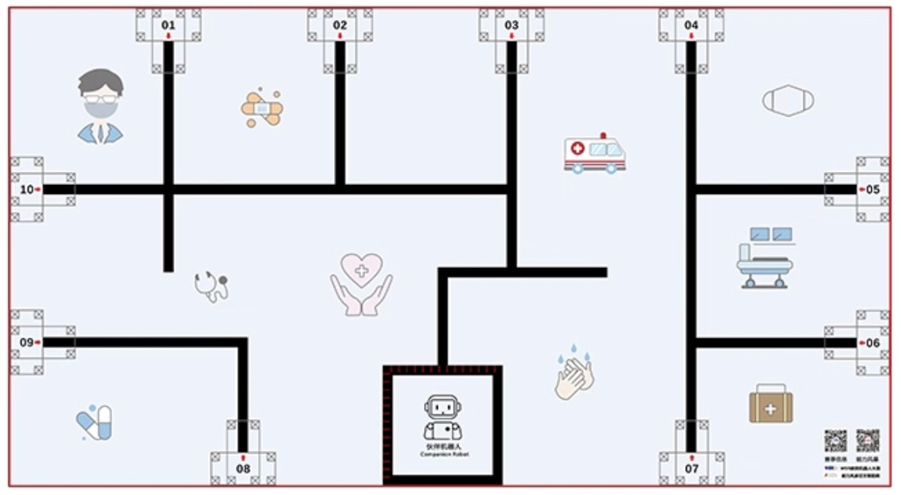

场地地图
官方场地图 + 22 节点 / 21 条边 / 10 个模型位。圆点是模型位，虚线是脱线段。

底图：官方场地图
地图.jpg
编号 01–10 = 模型位；颜色 = 当前分配的任务
灰色虚线 = 没有任务
7 个任务
4 个预设任务 + 3 个现场任务（赛前 90 分钟公布）。
| 任务 | 分数 | 模型位 | 状态 | 依赖 / 说明 |
|---|
计分明细
改模型位/勾选后实时更新
跨任务依赖（最容易丢分）
① 取药点
药丸掉入药框 +50 → ② 回基地交付
药丸随车回基地 +50 → ③ 用药点
开盖 +50；放药丸 +50
药丸掉入药框 +50 → ② 回基地交付
药丸随车回基地 +50 → ③ 用药点
开盖 +50；放药丸 +50
如果跳过“回基地交付”，用药提醒最多只能拿 50 分。路线顺序必须是：T2 取药 → 回基地 → T3 用药。
现场 5 分钟流程
- 拿到“任务 → 模型位”的分配表。
- 在这个页面把 7 个任务的下拉框选好，看地图是否冲突。
- 看预计得分与依赖提醒，决定做哪些、跳过哪些。
- 把路线/程序写好后，按模型位和朝向核对动作。
- 上场前确认出发、返回、重启次数和药丸交付。
场地与时间
| 场地 | 220 cm（宽）× 120 cm（深） |
|---|---|
| 引导线 | 黑色，宽 2–3 cm（图上 2.5 cm） |
| 基地 | 30 × 30 cm，底部中央 |
| 模型位 | 01–10，贴四边；模型区 16×8 或 8×16 cm |
| 单场 | 180 秒 |
| 赛前准备 | 90 分钟（现场任务此时公布） |
| 机器人 | 出发前 ≤ 30×30×30 cm；≤ 4 个电机；禁数字舵机；塑料拼插；电池 ≤ 9V |
计分表
| 出发 | 30 |
|---|---|
| 返回基地 | 30 |
| 扶起老人 | 50 |
| 自动取药 | 50（落药）+ 50（带回基地） |
| 用药提醒 | 50（开盖 >90°）+ 50（放入药丸） |
| 活动健身 | 50 |
| 现场任务 ×3 | 各 100 |
| 自主运行奖励 | 40 − 10 × 重启次数（≥ 0） |
满分示例：600（任务）+ 30 + 30 + 40 = 700 分。
场地结构：3 段线网，靠基地/脱线连接
左网（经 V6 接基地）
10 → 01/02/03 主横线 → 03 竖线 → 中部横线 → V6 → 基地。
可从基地沿黑线进入。
右网（F01 脱线进入）
04 → V4 竖线 → 05 / 06 两个路口 → 07；只有一条竖线 + 两条横线。
基地→07 脱线 62.0 cm。
08-09 支线（F02 脱线进入）
09 → J09 → 08；它和左网/右网都没有黑线相连。
基地→08 脱线 50.3 cm。
所以路线天然分成“多趟”：左网 / 右网 / 08-09 支线之间的任何转场都要经过基地。不要把“两网不连通”理解成只有左/右两个线网——准确说是 3 段线网 + 1 条基地段。
模型朝向（红色箭头）
| 01–04（上边） | 270°（朝场内 / 向下）推断，现场确认 |
|---|---|
| 05 / 06（右边） | 180°（朝场内 / 向左） |
| 07 / 08（下边） | 90°（朝场内 / 向上） |
| 09 / 10（左边） | 0°（朝场内 / 向右） |
红色箭头只有约 1.5 cm，图上难以判读方向；01–04 是按“红标记在模型区靠场内一侧”推断的。比赛现场以实物为准。
读数与计分口径
- 出发 30：按“第一次离场”计一次；返回 30：按“最后一次回基地”计一次（我们的理解，需裁判确认）。
- 自主奖励：40 − 10 × 重启次数，最低 0；重启次数越多，奖励越少。
- 自动取药/用药提醒的 +50 必须满足“药丸随机器人回到基地”的交付条件。
- 现场任务在赛前 90 分钟公布，动作与得分条件以现场公布为准。
安全与检查
- 出发前机器人不得超过 30×30×30 cm，电机不超过 4 个。
- 第一次试跑先架空轮子，手放在电源开关附近。
- 车上程序要有超时保护：超时先停车，再回基地。
- 模型动作（推杆/开盖/扶起/转柄）先确认限位，再上速度。
地图数据
单位 cm；原点在场地左下角，x 向右、y 向上。数据真值源是 data/map_spec.json。
22节点
21边
10模型位
23实测参数
节点（22）
| 节点 | 类型 | x | y | 说明 |
|---|
边（21）
| 边 | 两端 | 类型 | 长度 cm |
|---|
23 个实测参数复核
实测值 vs 几何真值；规划以几何为准
正常 13
警告 5
错误 4
待确认 1
| # | 描述 | 实测 | 几何 | 差 | 等级 |
|---|
完整报告（含图上实测、feature、备注）见 docs/参数差异报告.md。